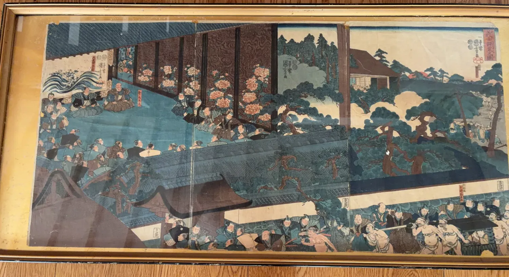

商品詳細

作品概要
江戸時代の浮世絵とみられる三枚続の作品です。御殿と庭園を背景に、多くの武士や相撲を取る人物が細密に描かれています。
歌川国芳の作品として伝わる「右大将頼朝公相撲御覧図」との関連が考えられますが、作者・作品名・制作年代・版元については現在確認中です。
状態
三枚をつないだ状態で額装されています。
経年によるヤケ、退色、折れ・継ぎ目などが見られます。詳細な状態については写真とあわせてご案内します。
作者等について
作者・作品名・制作年代・版元については現在確認中です。確認できた情報と、伝来・推定にもとづく情報を区別してご案内します。
ご注意
古い品のため、制作年代や作者等について確認できない事項があります。確認できた情報と伝来・推定情報を区別して掲載しています。
この品についてのお問い合わせは、お問い合わせページよりご連絡ください。
お問い合わせへ